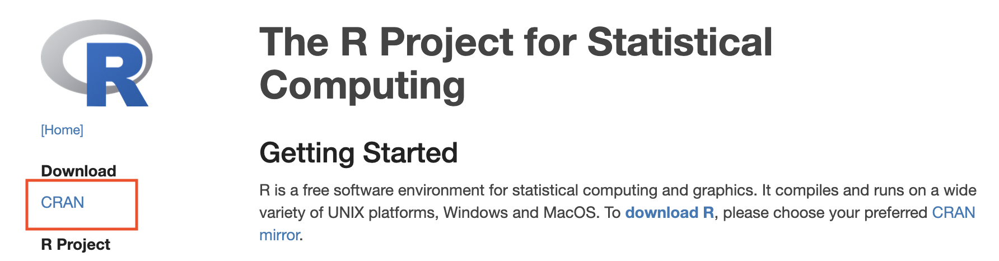

Business Statistics
Introduction
“Whatever you would make habitual, practice it; and if you would not make a thing habitual, do not practice it, but accustom yourself to something else.” Epictetus
This course companion is designed to help you build mastery in statistics and its applications using R. Through practice, you will develop the skills and confidence needed to apply statistical concepts effectively. Each chapter begins with a list of key concepts to guide your learning, and the problems are crafted to reinforce these ideas through hands-on experience. If you need additional support while learning R, I encourage you to explore @HOP. Take your time, enjoy the process, and make practice a habit!
Why R?
We will be using R to apply the lessons we learn in BUAD 231. R is a language and environment for statistical computing and graphics. There are several advantages to using the R software for statistical analysis and data science. Some of the main benefits include:
R is a powerful and flexible programming language that allows users to manipulate and analyze data in many different ways.
R has a large and active community of users, who have developed a wide range of packages and tools for data analysis and visualization.
R is free and open-source, which makes it accessible to anyone who wants to use it.
R is widely used in academia and industry, which means that there are many resources and tutorials available to help users learn how to use it.
R is well-suited for working with large and complex datasets, and it can handle data from many different sources.
R can be easily integrated with other tools and software, such as databases, visualization tools, and machine learning algorithms.
Overall, R is a powerful and versatile tool for data analysis and data science, and it offers many benefits to users who want to work with data.
Installing R.
To install R, visit the R webpage at https://www.r-project.org/. Once in the website, click on the CRAN hyperlink.
Here you can select the CRAN mirror. Scroll down until you see USA. You are free to choose any mirror you like, I recommend using the Duke University mirror.
Once you click on the hyperlink, you will be prompted to choose the download for your operating system. Depending on your operating system, choose either a Windows or Macintosh download.

Follow all prompts and complete installation.
Installing RStudio
Visit the Posit website at https://posit.co. Once on the website, hover to the top of the screen and select “Open Source” from the drop down menus.
Next, choose “R Studio IDE”.
Scroll down until you see the products. You want to download “RStudio Desktop” and make sure it is the free version.
Finally, select “Download RStudio” and follow the instructions for installation.
It is important to note that RStudio will not work if R is not installed. You can think of R as the engine and RStudio as the interface.
Posit Cloud
If you do not wish to install R, you can always use the cloud version. To do this, visit https://posit.cloud/. On the main page click on the “Get Started” button.
Choose the “Cloud Free” option and log in using your Google credentials (if you have a Google account) or sign up if you want to create a new account.